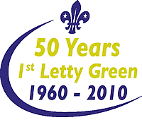
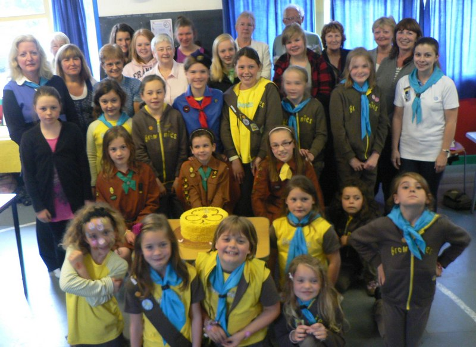
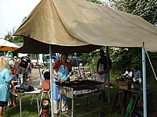
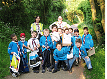
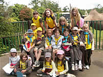

|
Welcome to the 1st Letty Green Scouts
& 1st Birch Green Brownies
Welcome to our Site - we have been around for a long time..........

1st Letty Green Group is home to the following groups:
Beaver Colony - meet on Thursday 5.30 to 6.45pm
Cub Pack - meet on Thursdays 7.00pm- 8.30pm
Scout Troop - meet on Mondays 8.00 - 9.30
1st Birch Green Brownies -Mondays 6.30 to 7.45
All units only meet during School Term Time.
To find our meeting place at
Cowper Hall, Hertingfordbury Cowper Junior School, Birch Green, SG14 2LR
click here and follow the map.
 |
 |  |
Cubs, Beavers & Brownies |
50th Birthday Group |
Annual Sausage Sizzle |
The Scout Association is the Worlds Largest Youth Organisation and has been running since Baden Powell held the first scout camp in 1907 on Brownsea Island,
 The Scout Association is a uniformed group for both Children and Leaders and your child could become an invested member after about 6 weeks if spaces are available, however if we are full then we can, if you wish, pass on your details to our District Commissioner who can pass your details onto another group within the district or we'll put you on our waiting list.
The Scout Association is a uniformed group for both Children and Leaders and your child could become an invested member after about 6 weeks if spaces are available, however if we are full then we can, if you wish, pass on your details to our District Commissioner who can pass your details onto another group within the district or we'll put you on our waiting list.
The sections are run by Volunteers from all walks of life and are vetted by the Scout Association. We are always looking for new people to help with the running of the Section Meetings and events.
Could you be our next Beaver scout leader, Cub Scout Leader, Scout Leader or assistant to one of these positions or an occasional helper, if so experience is not essential as training is offered to all volunteers,
all you have to do is contact us with your details and we will get back to you.
If you have a child who is interested in joining us please drop me an email with your Childs name, DoB and either myself or the section leader will contact you.
We are open to Boys and Girls so don't be shy come and join the Adventure.
1st Birch Green Brownies meet in the Village as well so if this is what you are looking for their contact details are on the Brownie Page.
Our Committee is made up of volunteers, leaders and a few of our current parents, and they do a lot of work behind the scenes to keep the group running, If this should be of interest please contact us via the Committee email address.
We run various fundraising events throughout the year to raise money for the group to purchase equipment for the Children and to pay for the upkeep of the hut.
Any volunteers who feel they may be able to offer their experience and would like to help with the hut upkeep, maintenance on the property please contact us!
We are a group where all the sections get involved with each other on several occasions throughout the year at different events organised by The Group, the District and even the County!
The Letty Green Scout Group is part of Hertford District which itself is part of Hertfordshire County Scouts and we are Growing in numbers. Birch Green Brownies are part of Hertford District Girlguiding, again part of the County and Girlguiding UK.
I hope you enjoy browsing our site and are able to find all the information you are looking for!
Please enjoy our site and do not hesitate to contact us if you feel you can help in some way however big or small it may be.
All images on this site have been approved by the appropriate leaders and permission to show the images has been obtained from parents and guardians wherever possible. If you are the parent or guardian of a child whose image is shown on this website and you would like it to be removed, please contact us on chapman.lc@btinternet.com with details of the location of the image on the website, and we will remove it.
©Lemsford Online 2007 | created and maintained by www.colneywebservices.co.uk